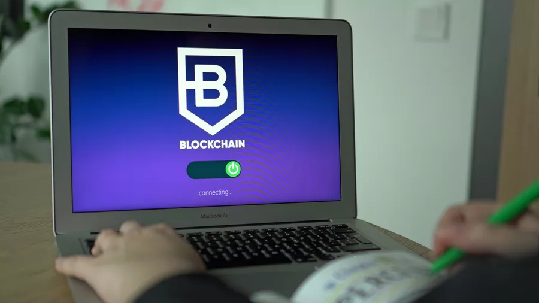

Una historia de la cadena de bloques
Blockchain es una tecnología que permite el almacenamiento y transferencia de datos en una red descentralizada. Permite guardar en memoria, en bloques, todos los detalles de las transacciones realizadas, sin posibilidad de modificar el bloque anterior, y esto, en varias redes al mismo tiempo. Para entender el funcionamiento descentralizado de la cadena de bloques, hay que imaginar que los datos de la cadena de bloques están registrados de forma idéntica en una gran cantidad de servidores. Cada acción realizada por un usuario se suma a la cadena de información, y la modificación de un dato ya presente en la cadena se vuelve imposible sin un inmenso poder de cómputo, y por lo tanto una inmensa energía, esta que debe ser modificada en de forma idéntica en todos los servidores a la vez para no ser localizado. De este modo, una gran cantidad de transacciones se registran y protegen, ya que la descentralización no permite que los piratas informáticos realicen cambios en todos los servidores al mismo tiempo. Esto tiene varias ventajas. La trazabilidad de la información es mucho más eficiente, porque no se puede modificar, la validación de las transacciones no necesita pasar por intermediarios para que sean seguras, como en las entidades financieras tradicionales, y de hecho, la ausencia de este intermediario permite el anonimato de las transacciones, ya que ya no es necesario declarar la identidad para realizarlas. Hasta la fecha, este sistema es uno de los más confiables, ya que nadie tiene los recursos eléctricos y el poder de cómputo para romper la cadena de bloques. Por esta razón, muchos activos digitales, como NFT o moneda virtual, lo utilizan para realizar miles de transacciones de forma segura. Bitcoin, que utiliza la tecnología financiera de la cadena de bloques, ha sido un precursor en la economía virtual, y hoy representa una de las cadenas más desarrolladas, si no la cadena, en términos de número total de transacciones realizadas de forma descentralizada. Encontramos una adopción masiva de este proceso como medio de pago en el arte, pero también en las transacciones diarias, en el comercio electrónico, la especulación bursátil, y cada vez más en todo tipo de aplicaciones, desde el transporte de mercancías para una mejor gestión. de la trazabilidad de productos, al transporte de personas para un mejor flujo de información en varios lugares gracias a la rapidez de las transacciones y de la información, o en el servicio público o seguros para una gestión segura de bases de datos por ejemplo. y hoy representa una de las cadenas más desarrolladas, si no la cadena, en cuanto a número total de transacciones realizadas de forma descentralizada. Encontramos una adopción masiva de este proceso como medio de pago en el arte, pero también en las transacciones diarias, en el comercio electrónico, la especulación bursátil, y cada vez más en todo tipo de aplicaciones, desde el transporte de mercancías para una mejor gestión. de la trazabilidad de productos, al transporte de personas para un mejor flujo de información en varios lugares gracias a la rapidez de las transacciones y de la información, o en el servicio público o seguros para una gestión segura de bases de datos por ejemplo. y hoy representa una de las cadenas más desarrolladas, si no la cadena, en cuanto a número total de transacciones realizadas de forma descentralizada. Encontramos una adopción masiva de este proceso como medio de pago en el arte, pero también en las transacciones diarias, en el comercio electrónico, la especulación bursátil, y cada vez más en todo tipo de aplicaciones, desde el transporte de mercancías para una mejor gestión. de la trazabilidad de productos, al transporte de personas para un mejor flujo de información en varios lugares gracias a la rapidez de las transacciones y de la información, o en el servicio público o seguros para una gestión segura de bases de datos por ejemplo.

Conclusión
Los NFT evolucionan en un mundo complejo basado en blockchain, criptomonedas y plataformas dedicadas. Sin embargo, como hemos visto, crear un NFT es bastante simple y cualquiera puede ingresar a este mercado. Armado con una simple tableta de dibujo, es posible dibujar una obra de arte digital y ponerla en el mercado con unos pocos clics. El mundo del arte no se ha equivocado, y las NFT incluso están entrando en las salas de subastas tradicionales, lo que permite que cualquier persona compre estas obras digitales e invierta en el mundo del arte.